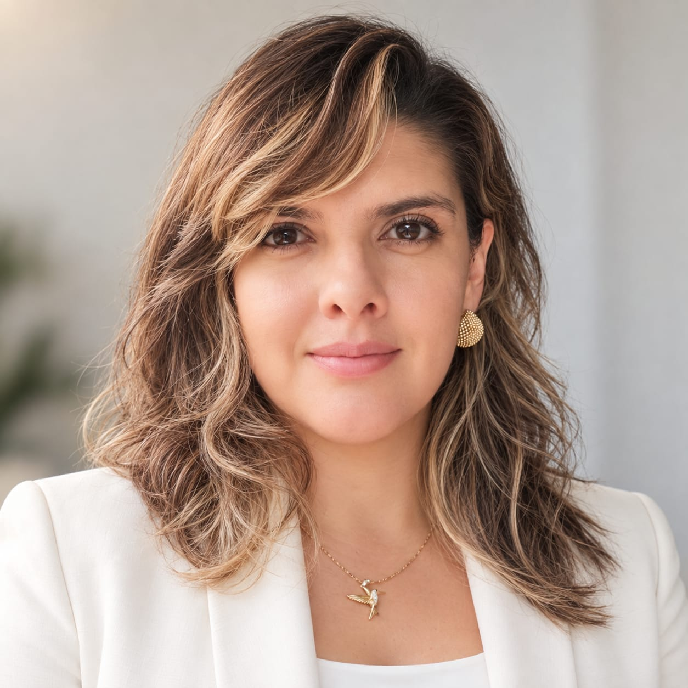

Comunidad nueva
Crews y amigos de otros colegios para aprender y crear juntos.
El evento de fin de año para adolescentes
La IA puede hacerlo casi todo. Aquí descubres qué haces tú.
Una o dos semanas para crear comunidad, aprender nuevas tecnologías, conocerte y hacer tu upgrade.
La inscripción y el pago los realiza únicamente el padre, madre o representante legal.
Un upgrade que se puede ver
Entran con curiosidad y terminan presentando un proyecto propio, con nuevas herramientas y una mirada más clara sobre lo que son capaces de hacer.
Crews y amigos de otros colegios para aprender y crear juntos.
Herramientas para crear y decidir, no para dejar de pensar.
Fortalezas, emociones, propósito y visión de futuro.
Una creación presentada frente a las familias en el Demo Day.
Así se vive
Música, la pregunta del día y el reto que mueve a toda la comunidad.
IA, robótica y creación digital con tablets, LEGO y prototipos.
Equipos para resolver retos, sumar insignias y crear un proyecto.
Presentación final y un momento de conexión con las familias.
Dos semanas · Dos experiencias
Se puede vivir una semana o las dos. Quien elige el pase completo vive diez días diferentes.
La agenda completa se publicará cuando quede confirmada. El pase de dos semanas incluye diez días distintos.
El reto que más recuerdan
Una experiencia para descubrir que pueden atravesar lo incómodo, siempre desde la seguridad y sin presión del grupo.

Quién acompaña el proceso
Directora de Fundación SOKA · Inteligencia emocional
Docente de inteligencia emocional y coach ontológica de adolescentes y niños. Es fundadora y directora de Fundación SOKA y formadora de la Escuela ECOA.
Acompaña procesos de desarrollo emocional y personal, y dirige el reto de hielo dentro de 2MINDS Summit.
Contenido adecuado para su etapa
Emociones, pertenencia, juego, construcción y una forma cercana de reconocer sus fortalezas.
Propósito, decisiones, liderazgo y creación con mayor profundidad.
Resuelve las dudas importantes
Edades, metodología, seguridad, horarios, inversión y acompañamiento familiar, explicados en pocos minutos.
GUÍA PARA FAMILIAS · 01/04
No. Se aprende haciendo, desde cero y en equipo.
La información para organizarse
Elige la experiencia
El valor completo es la referencia principal. El abono desde $200.000 funciona como facilidad para asegurar el cupo y se descuenta del total.
Respuestas rápidas
No. Se aprende haciendo, desde cero y en equipo.
No. Cada semana tiene una programación distinta. Se puede elegir una o vivir las dos.
No. Siempre es voluntario y requiere autorización del adulto responsable y formulario de salud.
Kit de bienvenida, Main Stage, Labs, reto de hielo guiado, materiales y tecnología, insignias, proyecto final, Demo Day y acceso a la comunidad 2MINDS.
El adulto responsable puede asegurar el cupo con un abono mínimo de $200.000. Ese valor se descuenta del total y el saldo se paga antes de comenzar la semana elegida.